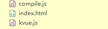

原文出处:本文由博客园博主残梦a提供。
原文连接:https://www.cnblogs.com/sunhang32/p/11810867.html
原文连接:https://www.cnblogs.com/sunhang32/p/11810867.html
说一说我对于mvvm模型的理解吧
我第一次接触mvvm也是在学习vue的时候,在我看来vue和react都是数据驱动视图,但是vue属于标准的mvvm模型,react是从组件化演变而来
不多废话,直接粘图

第一次使用mvvm的时候感觉特别的神奇,我只是修改了数据就可以驱动视图的改变
- 学习mvvm模型的作用
一开始就是在学习vue的使用还有vuex等等很多,也能做一些小的网站,但就是没有办法提升自己的vue到一个更高的境界,后来就不断的往深了学习
听过网上的这么一句话
编程世界和武侠世界比较像,每一个入门的程序员,都幻想自己有朝一日,神功大成,青衣长剑,救民于水火之中,但是其实大部分的人一开始学习方式就错了,导致一直无法进入高手的行列,就是过于看中招式,武器,而忽略了内功的修炼,所以任你慕容复有百家武学,还有被我乔峰一招制敌,所以这就是内功差距
原理就是内功修炼的捷径
进入主题
- 原理
Object.defineProperty(obj,name,{get:function(),set:function()})
- 手写
mvvm主要分为两部
- kvue.js
- 获取数据,先获取options
- 把options.data的数据通过Object.key()解析
- 进入主题 Obejct.defineProprety() 进行双向绑定
- 接下来是两个类 Dep 和 Watcher (关系可以看上面的图片)
- compile.js
- 获取dom宿主节点 options.el
- 把宿主节点拿出来遍历,高效 createDocumentFragment()
- 编译过程 判断是否是文本节点,如果是文本节点就通过正则的分组获取到{{}}插值表达式中间的值
- 更新函数 初始化更新函数,调用Watcher
第一次写,怕说不明白,直接粘上代码
先创建目录结构

代码
- index.html
<!DOCTYPE html>
<html lang="en">
<head>
<meta charset="UTF-8" />
<meta name="viewport" content="width=device-width, initial-scale=1.0" />
<meta http-equiv="X-UA-Compatible" content="ie=edge" />
<title>Document</title>
</head>
<body>
<div id="app">
<!-- 插值绑定 -->
<p>{{name}}</p>
<!-- 指令解析 -->
<p k-text="name"></p>
<p>{{age}}</p>
<p>
{{doubleAge}}
</p>
<!-- 双向绑定 -->
<input type="text" k-model="name" />
<!-- 事件处理 -->
<button @click="changeName">呵呵</button>
<!-- html内容解析 -->
<div k-html="html"></div>
</div>
<script src="./compile.js"></script>
<script src="./kvue.js"></script>
<script>
const kaikeba = new KVue({
el: "#app",
data: {
name: "I am test.",
age: 12,
html: "<button>这是一个按钮</button>"
},
created() {
console.log("开始啦");
setTimeout(() => {
this.name = "我是测试";
}, 1500);
},
methods: {
changeName() {
this.name = "残梦a博客园";
this.age = 1;
}
}
});
</script>
</body>
</html>- kvue.js
// new KVue({data:{...}})
class KVue {
constructor(options) {
this.$options = options;
// 数据响应化
this.$data = options.data;
this.observe(this.$data);
// 模拟一下watcher创建
// new Watcher();
// // 通过访问test属性触发get函数，添加依赖
// this.$data.test;
// new Watcher();
// this.$data.foo.bar;
new Compile(options.el, this);
// created执行
if (options.created) {
options.created.call(this);
}
}
observe(value) {
if (!value || typeof value !== "object") {
return;
}
// 遍历该对象
Object.keys(value).forEach(key => {
this.defineReactive(value, key, value[key]);
// 代理data中的属性到vue实例上
this.proxyData(key);
});
}
// 数据响应化
defineReactive(obj, key, val) {
this.observe(val); // 递归解决数据嵌套
const dep = new Dep();
Object.defineProperty(obj, key, {
get() {
Dep.target && dep.addDep(Dep.target);
return val;
},
set(newVal) {
if (newVal === val) {
return;
}
val = newVal;
// console.log(`${key}属性更新了：${val}`);
dep.notify();
}
});
}
proxyData(key) {
Object.defineProperty(this, key, {
get(){
return this.$data[key]
},
set(newVal){
this.$data[key] = newVal;
}
})
}
}
// Dep：用来管理Watcher
class Dep {
constructor() {
// 这里存放若干依赖（watcher）
this.deps = [];
}
addDep(dep) {
this.deps.push(dep);
}
notify() {
this.deps.forEach(dep => dep.update());
}
}
// Watcher
class Watcher {
constructor(vm, key, cb) {
this.vm = vm;
this.key = key;
this.cb = cb;
// 将当前watcher实例指定到Dep静态属性target
Dep.target = this;
this.vm[this.key]; // 触发getter，添加依赖
Dep.target = null;
}
update() {
// console.log("属性更新了");
this.cb.call(this.vm, this.vm[this.key]);
}
}
- complie.js
// 用法 new Compile(el, vm)
class Compile {
constructor(el, vm) {
// 要遍历的宿主节点
this.$el = document.querySelector(el);
this.$vm = vm;
// 编译
if (this.$el) {
// 转换内部内容为片段Fragment
this.$fragment = this.node2Fragment(this.$el);
// 执行编译
this.compile(this.$fragment);
// 将编译完的html结果追加至$el
this.$el.appendChild(this.$fragment);
}
}
// 将宿主元素中代码片段拿出来遍历，这样做比较高效
node2Fragment(el) {
const frag = document.createDocumentFragment();
// 将el中所有子元素搬家至frag中
let child;
while ((child = el.firstChild)) {
frag.appendChild(child);
}
return frag;
}
// 编译过程
compile(el) {
const childNodes = el.childNodes;
Array.from(childNodes).forEach(node => {
// 类型判断
if (this.isElement(node)) {
// 元素
// console.log('编译元素'+node.nodeName);
// 查找k-，@，:
const nodeAttrs = node.attributes;
Array.from(nodeAttrs).forEach(attr => {
const attrName = attr.name; //属性名
const exp = attr.value; // 属性值
if (this.isDirective(attrName)) {
// k-text
const dir = attrName.substring(2);
// 执行指令
this[dir] && this[dir](node, this.$vm, exp);
}
if (this.isEvent(attrName)) {
const dir = attrName.substring(1); // @click
this.eventHandler(node, this.$vm, exp, dir);
}
});
} else if (this.isInterpolation(node)) {
// 文本
// console.log('编译文本'+node.textContent);
this.compileText(node);
}
// 递归子节点
if (node.childNodes && node.childNodes.length > 0) {
this.compile(node);
}
});
}
compileText(node) {
// console.log(RegExp.$1);
this.update(node, this.$vm, RegExp.$1, "text");
}
// 更新函数
update(node, vm, exp, dir) {
const updaterFn = this[dir + "Updater"];
// 初始化
updaterFn && updaterFn(node, vm[exp]);
// 依赖收集
new Watcher(vm, exp, function(value) {
updaterFn && updaterFn(node, value);
});
}
text(node, vm, exp) {
this.update(node, vm, exp, "text");
}
// 双绑
model(node, vm, exp) {
// 指定input的value属性
this.update(node, vm, exp, "model");
// 视图对模型响应
node.addEventListener("input", e => {
vm[exp] = e.target.value;
});
}
modelUpdater(node, value) {
node.value = value;
}
html(node, vm, exp) {
this.update(node, vm, exp, "html");
}
htmlUpdater(node, value) {
node.innerHTML = value;
}
textUpdater(node, value) {
node.textContent = value;
}
// 事件处理器
eventHandler(node, vm, exp, dir) {
// @click="onClick"
let fn = vm.$options.methods && vm.$options.methods[exp];
if (dir && fn) {
node.addEventListener(dir, fn.bind(vm));
}
}
isDirective(attr) {
return attr.indexOf("k-") == 0;
}
isEvent(attr) {
return attr.indexOf("@") == 0;
}
isElement(node) {
return node.nodeType === 1;
}
// 插值文本
isInterpolation(node) {
return node.nodeType === 3 && /\{\{(.*)\}\}/.test(node.textContent);
}
}